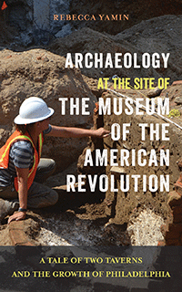

<body bgcolor="#FFFFFF" text="#000000" link="#0000FF" vlink="#CC0000" alink="#CC0000"><center><hr width="350" size="1" align="center" noshade>Using archaeological finds to tell the story of the growth of Philadelphia in microcosm<hr width="350" size="1" align="center" noshade><p><a href="https://cdcshoppingcart.uchicago.edu/Cart/ChicagoBook.aspx?ISBN=&&PRESS=temple" target="_top">Buy this book!</a> | <a href="https://cdcshoppingcart.uchicago.edu/Cart/Cart.aspx?PRESS=temple" target="_top">View Cart</a> | <a href="https://cdcshoppingcart.uchicago.edu/Cart/Cart.aspx?PRESS=temple" target="_top">Check Out</a></p><p></p></center><!--none//--><h1 class = "booktitle">Archaeology at the Site of the Museum of the American Revolution</h1> <h1 class = "subtitle">A Tale of Two Taverns and the Growth of Philadelphia</h1>
<h3>Rebecca Yamin With a Foreword by R. Scott Stephenson</h3>
paper: $19.95, Dec 18<BR>EAN:&nbsp;978-1-4399-1642-1<BR><font color=#990033>Not Yet Published Preorder</FONT><font size=-7><br>&nbsp;</font></p><p class="info"><p class="info"></p></td></tr></table>
<BR> <p class="info">160 pp<BR> 5 x 8<BR> 55 color photos, 2 figs., 8 halftones, 6 maps <p class="info"><font size=-7>&nbsp;</font></p><p class="info">
</P><BLOCKQUOTE></BLOCKQUOTE>
<p>When the Museum of the American Revolution acquired the land at Third and Chestnut streets in Olde City, Philadelphia, it came with the condition that an archaeological investigation be conducted. The excavation that began in the summer of 2014 yielded treasures in the trash: unearthed privy pits provided remarkable finds from a mid-eighteenth-century tavern to relics from a button factory dating to the early twentieth century. These artifacts are described and analyzed by urban archaeologist Rebecca Yamin in <i>Archaeology at the Site of the Museum of the American Revolution.</i>
<br/><br/>
Yamin, lead archaeologist on the dig, catalogues items-including earthenware plates and jugs, wig curlers, clay pipes, and liquor bottles-to tell the stories of their owners and their roles in Philadelphia history. As she uncovers the history of the people as well as their houses, taverns, and buildings that were once on the site, she explains that by looking at these remains, we see the story of the growth of Philadelphia from its colonial beginnings to the Second World War.
<br/><br/>
<i>Archaeology at the Site of the Museum of the American Revolution </i>is a perfect keepsake for armchair archaeologists, introductory students, and history buffs.<br>
<P CLASS="top"><A HREF="#top">BACK TO TOP</A></P>&nbsp;
<BR>&nbsp;
&nbsp;<P>
</P><BR>&nbsp;
<H2 class="inpageheading"><A NAME="author bio"></a>About the Author(s)</H2><p><b>Rebecca Yamin</b> is an historical archaeologist specializing in urban archaeology and the former director of the Philadelphia branch office of John Miler Associates, Inc., a company that specialized in historic preservation and cultural resource management. She is the author of <i>Digging in the City of Brotherly Love: Stories from Philadelphia Archaeology</i> and <i>Rediscovering Raritan Landing: An Adventure in New Jersey Archaeology</i>, and the co-editor of <i>Landscape Archaeology: Reading and Interpreting the American Historical Landscape.</i><br>
<P CLASS="top"><A HREF="#top">BACK TO TOP</A></P>
<p><h2 class="inpageheading"><a name="subjects"></a>Subject Categories</h2> <p><a href="http://www.temple.edu/tempress/philly.html" target="_top">Philadelphia Region</a> <br><a href="http://www.temple.edu/tempress/history.html" target="_top">History</a> <br><a href="http://www.temple.edu/tempress/urban.html" target="_top">Urban Studies</a> <br><a href="" target="_top"></a> <br><a href="" target="_top"></a> </p>
</p>
<P>
</P>
<p align="center"><a href="https://cdcshoppingcart.uchicago.edu/Cart/ChicagoBook.aspx?ISBN=&&PRESS=temple" target="_top">Buy this book!</a> | <a href="https://cdcshoppingcart.uchicago.edu/Cart/Cart.aspx?PRESS=temple" target="_top">View Cart</a> | <a href="https://cdcshoppingcart.uchicago.edu/Cart/Cart.aspx?PRESS=temple" target="_top">Check Out</a></p><p><font face="Arial" size="1"><a href="copyright.html" onMouseOver="window.status='Web Copyright Policy';return true;" onMouseOut="window.status=''" title="Web Copyright Policy">&copy;</a> _______________ <a href="http://www.temple.edu" target="new" onMouseOver="window.status='Link to Temple University home page';return true;" onMouseOut="window.status=''" title="Link to Temple University home page">Temple University</a>. All Rights Reserved. http://www.temple.edu/tempress/titles/2507_reg.html</font></p>